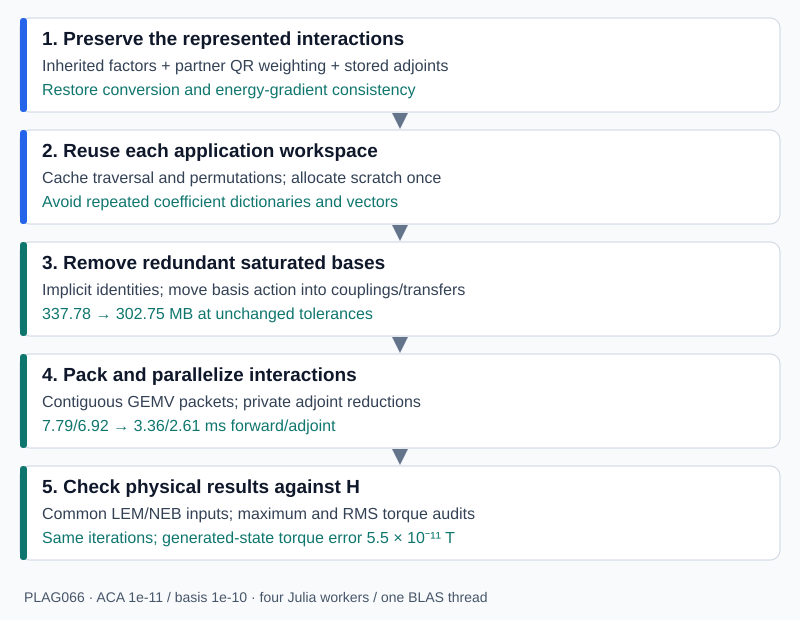

How accuracy, memory and speed improved
The v0.1.1 numerical changes addressed two separate problems: lost information during nested compression, and unnecessary storage and work when applying the corrected operator. v0.1.2 keeps that implementation and requires Julia 1.13 or later. Raising the Julia requirement is a maintenance decision; the measured performance gains come from the representation and matvec changes described here.
0.2.0 keeps the v0.1.1 accuracy fixes and adds a faster conversion that builds the same operator up to rounding (below), a new packet engine, exact pass-through bases, bounded mixed-precision storage and opt-in absolute error control. It also records an application finding: the tolerances validated on PLAG066 do not meet the same torque gate on larger grains, and absolute error control does (Accuracy at scale).

The validation page provides the measured evidence (four grains for 0.2.0, PLAG066 for v0.1.x). The practical guide shows how to use these APIs.
Why a small compression tolerance was insufficient
An H-matrix represents each admissible block independently:
\[H_{\tau\sigma}=A_{\tau\sigma}B_{\tau\sigma}^{\mathsf T}.\]
H² conversion replaces these independent factors by shared row and column bases, with a coupling for each block:
\[\widetilde H_{\tau\sigma}=V_\tau S_{\tau\sigma}W_\sigma^{\mathsf T}.\]
A child basis must represent the restrictions of interactions belonging to its ancestors as well as its own interactions. A locally accurate SVD of an incomplete collection of columns cannot preserve a direction that was never supplied to it. This explains why reducing rtol alone did not resolve the observed convergence discrepancy.
Preserve inherited interactions at every level
The earlier internal-basis construction projected a node's direct interaction factors but did not consistently include inherited factors when the node also had direct interactions. The corrected construction combines both collections before projection and SVD.
For a concrete example, suppose an ancestor interaction needs the constant vector on a child cluster, while that child's own interaction needs an alternating-sign vector. Keeping only the child's direct interaction can discard the constant direction even with a tiny local tolerance. The regression test supplies these two directions explicitly and verifies that the child's reconstructed basis retains both.
Nesting is implemented through child transfers:
\[V_\tau= \begin{pmatrix}V_{\tau_1}&0\\0&V_{\tau_2}\end{pmatrix} \begin{pmatrix}E_{\tau_1}\\E_{\tau_2}\end{pmatrix}.\]
Projection uses recursive nested compression rather than repeatedly materializing every full internal basis. That reduces temporary work while retaining the same projection.
Weight factors by the partner's QR factor
The magnitude of an ACA factor column alone does not measure the importance of its block contribution. Rescaling one rank-one term by
\[A_{:j}\leftarrow cA_{:j},\qquad B_{:j}\leftarrow B_{:j}/c\]
leaves the block unchanged, but changes an unweighted SVD of the columns of A. For row-basis construction, write the partner factor as
\[B=Q_B R_B,\qquad AB^{\mathsf T}=(AR_B^{\mathsf T})Q_B^{\mathsf T}.\]
The weighted factor A * R_B' measures the block through an orthonormal partner. Column construction similarly uses B * R_A'. This removes the artificial dependence of the local importance measure on arbitrary ACA factor scaling, up to floating-point effects. A regression rescales ACA factor columns by reciprocal factors of 1e6 and 1e-6, then checks the represented matrix and conversion accuracy.
Avoid unused parent bases
A parent with no direct or inherited far-field interactions does not need a basis merely because its children have their own local interactions. The corrected construction gives such a parent rank zero, while retaining the children's active bases and couplings. This avoids large identity embeddings that previously stored directions with no parent-level use.
A zero-rank parent is not an empty subtree. Recompression now traverses its descendants. Otherwise, the corrected zero-rank root could cause an entire active tree to be skipped.
Condense ancestor interactions during conversion
The corrected construction has a cost: a cluster's basis must represent its direct interactions and the restrictions of all its ancestors' interactions, so the v0.1.x builder passed every ancestor block down unchanged and the active widths grew with depth. On the larger grains the conversion took longer than the ACA stage (258 s on PLAG012 with v0.1.3).
The basis of a cluster t is the dominant left singular subspace of
\[C_t=\begin{bmatrix}D_t & D_{\mathrm{parent}}[t,:] & D_{\mathrm{grandparent}}[t,:] & \cdots\end{bmatrix},\]
with D_s the partner-weighted ACA factors of the blocks of cluster s. Its left singular vectors and values depend only on the Gram matrix C_t C_tᵀ. A thin QR factorization C_tᵀ = Q R gives L_t = Rᵀ with L_t L_tᵀ = C_t C_tᵀ, and every row restriction keeps that property, L_t[r,:] L_t[r,:]ᵀ = C_t[r,:] C_t[r,:]ᵀ. Each child therefore inherits L_t[child,:], of width at most the cluster size, instead of every ancestor block, and the transfer SVD uses the projection of L_t. This is exact up to rounding: the bases and truncation ranks agree with the v0.1.3 builder except for rounding-level decisions at the threshold, and compress_hmatrix_to_h2(...; _reference=true) keeps that builder for validation.
Further changes reduce work without changing the operator: a truncation that keeps every coefficient direction stores the identity (leaf V = I or an identity embedding of the children's coefficients) instead of an orthogonal SVD factor spanning the same space; tall transfer matrices are QR-condensed before their SVD; explicit rotations are applied with ormqr instead of forming Q; and a rigorous triangular-inverse certificate skips transfer SVDs at saturated parents.
The conversion runs as Julia tasks (threads, default with several Julia threads and one BLAS thread): a parent's transfer runs in the task that finishes its last child, independent subtrees run concurrently, and each coupling is formed as soon as both of its bases are final, while the top-level basis work continues. Every node's arithmetic is independent of the schedule, so results are bitwise independent of the thread count. With consume=true, which assemble_h2matrix_adaptive always uses for its private H-matrix, each H-matrix block is released right after its coupling exists.
At the validated settings (eta=3, rtol=1e-10, four Julia threads, one BLAS thread, separate processes on a shared 14-core M4 Pro), the conversion took:
| Grain (boundary nodes) | v0.1.3 conversion, s | 0.2.0 conversion, s | Sampled peak live heap of the build, GB (v0.1.3 → 0.2.0) |
|---|---|---|---|
| PLAG066 (6,028) | 12.5 | 1.39 | 1.3-1.4 → 0.62 |
| PLAG036 (12,415) | 50.7 | 8.97 | 3.3-3.6 → 1.85 |
| PLAG022 (17,875) | 137.8 | 24.2 | 7.0 → 3.95 |
| PLAG012 (30,321) | 257.8 | 31.8 | 14.1-15.1 → 6.0 |
Both produced the same stored packet operator (302.8, 714.8, 1511 and 3555 MB) with the same product errors against exact dense products. The heap figures cover the whole build, including the ACA stage, for which the 0.2.0 runs also used Merrill's faster boundary kernel and threaded H-matrix assembly; only the conversion times isolate this package.
Make the gradient differentiate the stored energy
Accuracy of the forward product and consistency of the energy derivative are separate requirements. Merrill previously could assemble a separately compressed transposed kernel. That second approximation need not equal the transpose of the stored forward operator.
The package now applies transpose(h2) and adjoint(h2) using the original bases, transfers, couplings and near-field blocks, reversing the product. For the current real-valued representation, each coupling uses its stored transpose. Rectangular shapes and distinct row/column permutations are respected.
The defining check is
\[z^{\mathsf T}(\widetilde Hx) =(\widetilde H^{\mathsf T}z)^{\mathsf T}x.\]
As a simple illustration, the derivative of the stored quadratic energy E(x) = x' * B * x / 2 is (B + B') * x / 2. Replacing B' with an independently approximated operator changes that derivative. The actual FEM/BEM energy includes additional maps and solves, whose adjoints must likewise use the stored forward components.
Merrill's integration uses a lazy adjoint of the same H² operator. This also avoids retaining a second independently assembled boundary operator. This consistency improvement is distinct from the 337.78-to-302.75 MB single-operator storage comparison below.
Make rank caps explicit
rtol controls local singular-value truncation; maxrank limits the retained rank. If the cap forces removal of a singular value above the requested relative threshold, the implementation reports it. With strict=true, assembly/conversion rejects that cap.
Strict recompression performs the operation on a temporary copy and leaves the original operator unchanged if the cap is inadequate. This protects a previously validated operator, at the cost of additional setup memory. Successful recompression requires rebuilding any existing matvec plans.
These checks do not certify a global operator error. ACA error, nested truncations, cancellation, physical weighting and solver sensitivity still require reference comparisons. PLAG066 reached row/column ranks 406/401 in the original tight-tolerance representation; the default cap 120 was not validated for that grain.
Reuse the work of applying the operator
H2MatvecPlan caches permutations, flattens the traversal metadata, and allocates coefficient and physical-vector scratch once. Repeated products reuse that scratch. The upward transform, coupling interactions, downward transform and near-field product still apply the same stored matrix.
This removes the repeated temporary dictionaries and vector allocations of the generic tree-based path. In the recorded PLAG066 run, raw H² products allocated approximately 0.85 MB forward and 1.06 MB adjoint per call. The warmed reusable baseline allocated zero bytes on the measured compiler, before any new compact representation was introduced.
One plan owns mutable scratch. A caller must use copy(plan) for each concurrent application; copying shares the numerical matrices and creates independent coefficient, vector and coupling scratch.
Remove redundant saturated bases algebraically
At very tight tolerances, a basis can have represented rank k at least as large as its cluster's physical size n. Storing an n × k basis provides little compression, even though the basis may be nonorthogonal or rank-deficient.
H2CompactMatvecPlan replaces such a basis by an implicit physical-coordinate identity. Let U be the original fully expanded basis at a saturated row cluster and W the original basis at a saturated column cluster. The block is preserved by
\[USW^{\mathsf T}=I_n\,(USW^{\mathsf T})\,I_m^{\mathsf T}.\]
If only the row is replaced, its coupling becomes U * S; if only the column is replaced, it becomes S * W'. A replaced child's transfer to an unreplaced parent becomes U_child * E_child. A replaced parent's contribution expands directly into physical output, so its old child transfers are unnecessary. Child-local interactions remain active.
The identity basis is never stored as a dense identity matrix: the upward pass copies physical values and the downward pass adds them directly. No singular values are discarded and no orthogonality assumption is needed. Only floating-point rounding is introduced. Tests cover nonorthogonal and overcomplete interpolation bases as well as adaptive bases.
For the selected PLAG066 operator, 539 row nodes and 537 column nodes use implicit identity bases. Numeric storage falls from 337,784,464 to 302,752,824 bytes at the same ACA/basis tolerances. This saving is a property of the tested operator's saturated bases, not a universal percentage for H² matrices.
Fold weakly compressing transfers into couplings
Above the saturated levels, a parent basis often compresses its children only mildly. On PLAG036 (12,415 boundary nodes, eta=3), depth-4 clusters of about 776 points keep rank about 423 from two children of rank about 249, so their transfer matrices are nearly square, while each such cluster has only a few couplings. These transfers made up about 30% of the compact plan's numbers.
H2CompactMatvecPlan(h2; passthrough=true) lets such a node use its children's concatenated coefficients [x_{c_1}; x_{c_2}] of dimension D as its own coefficients. Its expansion X = [T_{c_1}; T_{c_2}] (the children's effective transfers) is folded into its couplings, X*S or S*X', and into its own transfer to the parent, X*E; the children's transfers are no longer stored. The upward pass copies child coefficients and the downward pass adds them back. A node with rank k, parent rank k_p and summed coupling-partner width W is converted when
\[(D-k)\,(k_p+W) < D\,k,\]
that is, when this stores fewer numbers. Applying the same rule with D=|t| places nearly saturated leaves in physical coordinates. Row decisions are made bottom-up with the column widths of the identity rule, then column decisions with the final row widths; iterating these decisions changed the PLAG066 total by less than 0.1 MB. Like implicit identities, this is exact up to floating-point rounding.
Operator (eta=3, ACA/basis 1e-11/1e-10) | Compact packet storage | With passthrough=true |
|---|---|---|
| PLAG066 (6,028 nodes) | 302.75 MB | 288.08 MB |
| PLAG036 (12,415 nodes) | 714.85 MB | 661.02 MB |
| PLAG022 (17,875 nodes) | 1511.48 MB | 1400.01 MB |
Products changed by at most 1.4e-15 relative to the original plan, and errors against exact dense products were unchanged. With the packet engine described below (four workers, interleaved medians in one process on a shared machine), forward/adjoint products took 1.90/1.72 ms against 2.00/1.80 ms on PLAG066 and 4.68/3.86 ms against 4.81/4.29 ms on PLAG036: as products are close to bandwidth bound, pass-through saves time roughly in proportion to the stored numbers it removes. (Against the earlier v0.1.3 packet engine the saving was 16-22%.)
Pack interactions into larger contiguous products
Many small coupling products have call, indexing and memory-access overhead. H2PacketMatvecPlan groups couplings sharing a row coefficient range:
\[\widehat y_\tau\mathrel{+}= \begin{bmatrix}S_{\tau\sigma_1}&S_{\tau\sigma_2}&\cdots\end{bmatrix} \begin{pmatrix}\widehat x_{\sigma_1}\\\widehat x_{\sigma_2}\\\vdots\end{pmatrix}.\]
Packing does not truncate matrix entries; it changes evaluation and accumulation order. In v0.1.3 the selected operator contained 263 coupling packets and 448 near-field packets, applied by BLAS GEMV after gathering inputs into scratch. A one-worker packet plan improved the forward/adjoint medians from 7.79/6.92 ms for the reusable baseline to 6.27/5.50 ms.
The 0.2.0 packet layout keeps couplings as row packets, but stores the near field as column packets: every dense block is split at the elementary column intervals defined by all near-field column ranges, and all pieces of one interval are stacked vertically,
\[Q_e=\begin{bmatrix}D_{\tau_1 e}\\ D_{\tau_2 e}\\ \vdots\end{bmatrix}.\]
Each packet is then applied by a single long-column kernel in both directions, so the near field and the couplings need no dot products over very short columns (a 32-row near-field leaf block applied transposed ran at about 13-25 GB/s on one core, versus 60-70 GB/s for long columns); the upward pass still applies transposed transfer matrices whose columns have the child rank as length. Fused kernels read input segments in place instead of gathering them and replace BLAS GEMV. On the same packets the fused loops were measured at about 66-70 GB/s against 53-60 GB/s for GEMV; the gap depends on packet shape and run.
A coupling packet stores its numbers in up to three parts by storage precision: Float64, and the Float32 and Float16 tiers of mixed-precision couplings (below). Within a part, a segment is either direct (the coupling block, or its dense Float64 or Float32 part) or factored, L*Diagonal(c)*R': L lives in the part matrix, the right factor R and the optional power-of-two scales c are kept per segment, and the inner vector R'*x̂_σ (forward) or L'*ŷ_τ (transposed) goes through per-worker scratch. Every part is applied in Float64 arithmetic. Each coupling keeps one slot per column coefficient whatever parts it has, so the slot reduction below does not change; packets with direct Float64 segments only run the plain path bitwise unchanged. Pass-through basis nodes (above) copy child coefficients in the upward pass and add them back in the downward pass.
Parallelize with explicit ownership of writes
A product runs three phases of independent tasks:
- upward pass, one task per coefficient-bearing subtree of the input tree, together with the near-field packets, which need no basis coefficients;
- coupling packets, one task per packet;
- slot reduction and downward pass, one task per coefficient-bearing subtree of the output tree.
Subtrees rooted at the highest nodes with nonempty coefficients have disjoint coefficient and physical index ranges. Among the packet tasks, a forward coupling packet owns its row coefficient range and a transposed near-field packet owns its column interval. The other two cases write private slots: the transposed coupling packet writes M' * x̂_τ and the forward near-field packet writes Q_e * x_e. The output subtree that owns each destination range adds the slots in fixed order, immediately before its downward pass. Near-field rows are split at subtree boundaries for this purpose.
No two tasks of a phase write the same entry, so no worker reduction buffers are needed. Tasks are claimed dynamically from a cost-descending list. Each task has a fixed evaluation order, so products are bitwise independent of the worker count and of the task assignment; this is tested. The earlier serial forward near-field fallback and per-worker transpose reductions are gone. The forward near field, which overlapped in rows across tree levels, and the upward and downward passes all run in parallel.
Forward products also start the downward pass of a row subtree as soon as its last coupling packet completes: the worker that completes it runs the pass at once, without waiting, so forward products need two task regions.
With four workers and one BLAS thread, forward/adjoint medians against the v0.1.3 packet plan in the same process were:
| Grain (boundary nodes) | Stored MB | v0.1.3 packet, ms | Current packet, ms |
|---|---|---|---|
| PLAG066 (6,028) | 302.75 | 3.42 / 2.75 | 1.83 / 1.62 |
| PLAG036 (12,415) | 714.85 | 9.46 / 8.02 | 5.01 / 4.71 |
| PLAG022 (17,875) | 1,511.48 | 19.41 / 18.51 | 10.72 / 9.63 |
The machine was shared during these runs, so absolute times varied by about 10%. Both plans store the same numeric data. Products differ from the v0.1.3 plan by at most 8.4e-16 relative, and errors against dense products are unchanged. Single-vector products are close to memory-bandwidth bound: with four workers, a product took 1.1-1.2 times as long as reading every stored matrix once. Adding workers therefore helped little beyond 6-8 on a 10+4-core M4 Pro. Threaded products allocate small task-scheduling objects (5-8 KB per call with four workers); one-worker plans do not allocate.
Apply several right-hand sides at once
mul!(Y, plan, X) and mul!(Y, adjoint(plan), X) with matrices run the same phases on column-major blocks of up to 16 vectors. Register-blocked kernels reuse each packet column from cache for four vectors at a time, so the operator is streamed once per block. With four workers, the time per vector at k = 9 was 0.6-0.7/0.6 ms forward/adjoint on PLAG066 (single products: 1.8/1.6 ms), 1.5/1.6 ms on PLAG036 and 3.1/2.9 ms on PLAG022. Multi-vector products are compute-bound rather than bandwidth-bound, so they keep scaling with workers: with eight workers on PLAG066 the time was 0.43/0.32 ms per vector. Results agree with column-wise products up to about 5e-16 relative. The workspace is allocated on first use and kept by the plan; multi_workspace_bytes(plan, k) reports its size (20, 43 and 67 MB for k = 9 on the three grains) and release_multi_workspace!(plan) frees it.
Separate representation changes from new approximations
The selected tight-tolerance plan uses coupling_rtol=nothing. Reusable scratch, implicit identities and packet packing do not add a truncation tolerance.
H2LowRankMatvecPlan, optional compact-plan coupling SVD, relaxed basis tolerances and recompression can reduce storage further, but change the approximation. An earlier 244.40 MB candidate used basis tolerance 1e-7 and had screened torque discrepancy about 3.46e-7 T. It passed that experiment's 1e-6 T gate, but does not meet the later 1e-9 T gate. The 303 MB result retains basis tolerance 1e-10; it meets the 1e-9 T gate on PLAG066 but not on larger grains (Accuracy at scale).
Packet plans keep factorized couplings as factors: left factors join the packet matrix and right factors are applied per segment, so the packet stores the compact plan's numbers (keep_factors=false restores re-materialization).
Truncate and round couplings against the operator scale
A block-relative coupling tolerance resolves weak blocks to a much smaller absolute error than strong ones. With coupling_scale=:global, singular values of the compact couplings are discarded below coupling_rtol times the largest stored block norm, including the near field. Because many couplings of the saturated levels are physical-coordinate blocks, this acts like a global absolute truncation of those blocks, while the nested bases keep their rtol.
coupling_precision=Float32 additionally stores each retained component whose singular value is below coupling_rtol*scale/eps(Float32) in Float32, as factors or as a dense remainder, and keeps the larger components in Float64. coupling_precision=Float16 adds a third tier: components below coupling_rtol*scale/eps(Float16) become Float16 factors. Factor columns are scaled by exact powers of two whenever a column would leave the normal Float32 range (always for Float16), so the tiers keep their relative precision for operators of any magnitude, and a Float32 dense remainder is used only when its entries are within the Float32 range; ordinary operators such as the BEM matrices here need no Float32 scales. Rounding a component σ u v' to T perturbs it by about 2 eps(T) σ, which is at most about 2 coupling_rtol*scale in each tier; the rounding errors of a block's reduced-precision components add up, so this is an estimate, not a bound, and the realized rounding error can exceed the realized truncation error when singular values decay fast. Products load the stored low-precision numbers and accumulate in Float64, so the adjoint remains the exact transpose of the stored operator up to Float64 rounding; one-worker products remain allocation free.
Coupling truncation can be measured against each coupling's own norm or against one operator scale (coupling_scale=:global or a number), and error_control=:global does the same for ACA and the cluster bases. For this boundary operator the admissible block norms are nearly scale-invariant, so global and block-relative control select almost the same ranks; at equal accuracy the global variants saved 0-1% (up to 2.5% at relaxed accuracy), while the coupling truncation itself (with eta=1.5) saved 6-14% against the validated eta=3 operator on PLAG066-PLAG022. See Accuracy and performance.
These are approximations and require the same physical validation as any relaxed tolerance; the measured product errors in the next table were obtained against exact dense products and are not torque errors. Packet plans with four workers, nmax=32, ACA 1e-11:
| Case | Configuration | Storage | Max. relative product error (forward/adjoint) |
|---|---|---|---|
| PLAG066 | baseline eta=3, rtol=1e-10 | 302.75 MB | 1.85e-11 / 1.72e-11 |
| PLAG066 | eta=1.5, rtol=1e-10, passthrough, global coupling_rtol=2e-11 | 258.55 MB | 1.62e-11 / 1.65e-11 |
| PLAG066 | eta=1.5, rtol=5e-11, passthrough, global coupling_rtol=1.5e-11, Float32 | 190.24 MB | 1.37e-11 / 1.38e-11 |
| PLAG066 | eta=1.5, rtol=5e-11, passthrough, global coupling_rtol=1e-11, Float16 | 179.14 MB | 1.22e-11 / 1.26e-11 |
| PLAG036 | baseline eta=3, rtol=1e-10 | 714.85 MB | 7.71e-11 / 7.60e-11 |
| PLAG036 | eta=1.5, rtol=1e-10, passthrough, global coupling_rtol=2e-11 | 628.53 MB | 6.09e-11 / 6.16e-11 |
| PLAG036 | eta=1.5, rtol=5e-11, passthrough, global coupling_rtol=1.5e-11, Float32 | 497.86 MB | 3.35e-11 / 3.27e-11 |
| PLAG036 | eta=1.5, rtol=5e-11, passthrough, global coupling_rtol=1e-11, Float16 | 474.95 MB | 3.32e-11 / 3.23e-11 |
| PLAG036 | eta=1.5, rtol=1e-10, passthrough, global coupling_rtol=3e-11, Float16 | 438.38 MB | 7.31e-11 / 7.42e-11 |
| PLAG022 | baseline eta=3, rtol=1e-10 | 1511.48 MB | 5.91e-11 / 5.10e-11 |
| PLAG022 | eta=1.5, rtol=5e-11, passthrough, global coupling_rtol=1.5e-11, Float32 | 916.00 MB | 2.81e-11 / 2.57e-11 |
| PLAG022 | eta=1.5, rtol=5e-11, passthrough, global coupling_rtol=1e-11, Float16 | 853.52 MB | 2.76e-11 / 2.40e-11 |
Storage and errors were reproduced on the current packet engine to the reported digits for PLAG066 and PLAG036 (PLAG022 was measured with the earlier engine); Compare the variants below gives same-process timings. Reduced-precision parts store fewer bytes per number but convert every number to Float64 before multiplying it, and factored segments add short inner products, so they are compute bound rather than bandwidth bound: with four workers the Float32 variant ran about as fast as the validated packet plan (9% faster to 5% slower) and the Float16 variant 7-26% slower, with one worker up to 17% and 38% slower, and products with several right-hand sides took 11-36% longer per vector. In an earlier run on a shared machine they gained with more workers (eight workers: 21% and 12% faster forward products than the validated packet plan on PLAG066). Building the compact plan adds threaded SVDs of all couplings (about 1 s on PLAG066, 2 s on PLAG036; a Frobenius-norm bound skips most spectral norms of the global scale, giving the same value); because eta=1.5 makes ACA and the conversion cheaper, H-matrix assembly, conversion and plan took 3.7 s against 2.9 s for the validated build on PLAG066 and 12.2 s against 13.0 s on PLAG036. The build-time memory peak remains the conversion (H-matrix plus H² matrix); with consume=true the plan stage stays below it. Dense storage is 290.69, 1233.0 and 2556.1 MB for the three grains.
The dense PLAG066 matrix needs 290.69 MB, so only the mixed-precision variants compress it substantially at this accuracy. The physics of the kernel limits compression: at relative accuracy near 1e-11 the far field of clusters below roughly 200 points remains full rank even for eta=0.5, so much of the operator is stored as dense or physical-coordinate blocks whatever the admissibility.
Store low-weight packet rows in reduced precision under a bound
H2MixedPacketMatvecPlan reduces precision without changing the compact operator's ranks, under an a priori bound. Each coupling packet P (all couplings of one row node, k × N) is rotated to its left singular basis, P = Q W, so row i of W has norm ω_i = σ_i(P). Rounding row i to Float32 perturbs the operator by at most u₃₂ ω_i in the Frobenius norm (u₃₂ = 2⁻²⁴; an optional 48-bit format has u₄₈ = 2⁻³⁷), so a global Lagrangian selection stores the low-weight rows in reduced precision and minimizes bytes subject to
\[\|\widetilde A - A\|_F \le \Big(\sum_t \beta_t^2 \big[\textstyle\sum_{i\in f_{32}(t)} u_{32}^2\omega_i^2 + \sum_{i\in f_{48}(t)} u_{48}^2\omega_i^2\big]\Big)^{1/2} \le \texttt{precision\_rtol}\cdot\eta ,\]
with β_t the product of the row and column basis norms and η the Frobenius norm of the stored blocks (‖A‖_F for orthonormal bases). The bound covers the reduced-precision rounding only; the Float64 rotations add roundoff of order ε κ ‖P‖ (about 1e-16 relative for orthonormal bases). Products accumulate in Float64, so the adjoint is the exact transpose of the stored mixed operator.
The rotation is absorbed into an explicit row basis (E ← Uᵀ E, V ← V U, children's E ← E U) at no storage cost. Where the coefficients are not reached through a transfer matrix, it is stored as Householder reflectors instead, and their bytes enter the selection: for saturated (identity) rows, for pass-through nodes and for the children of pass-through nodes, whose coefficients are copied into and out of the parent's concatenated coefficients. (Absorbing the rotation of such a child would rotate a slice of its parent's coefficients without rotating the parent's packet; on a test problem that gave products 1e7-1e10 times the bound, which the combined tests now exclude.) The near field stays in Float64.
The mixed packets are a second packet type of the same engine: H2PacketMatvecPlan{C} runs either packet type with the same phases, write ownership, slot reductions, near-field column packets and fused kernels, which widen Float32 and 48-bit entries on load. Products are therefore bitwise independent of the worker count, several right-hand sides work, precision_rtol=0 reproduces the packet plan bitwise, and construction is bitwise deterministic under threads. Building the plan costs eigen-decompositions of the packet Gram matrices (0.5-1 s on PLAG066, 2.7-4.5 s on PLAG036).
coupling_precision (above) and this plan are alternatives: the former rounds small singular components of each coupling after truncating it against an operator scale and has only an error estimate; the latter rounds whole rotated packet rows of an untruncated operator under a rigorous bound. Factorized couplings are multiplied out in mixed packets, so combining them with coupling_rtol gives up the truncation's storage saving, and a compact plan with reduced-precision couplings is rejected.
Compare the variants
Same-process measurements on the PLAG066 and PLAG036 boundary operators, all from the same H² matrices (ACA 1e-11, nmax=32, strict ranks, consuming threaded conversion) and packet engine. Errors are the largest relative errors of forward/adjoint products against exact dense products over four reference vectors (three Gaussian, one smooth; smooth inputs and single columns see errors 1.5-4.5x larger, so these are comparative levels, not bounds); the validated eta=3 operator gives 1.850e-11/1.717e-11 (PLAG066) and 7.705e-11/7.601e-11 (PLAG036). Product times are medians of 15-21 interleaved rounds with one BLAS thread on a 14-core M4 Pro (load average 2-4); the plan time excludes compilation and building from the H² matrix.
| Variant | Exact? | PLAG066 MB | PLAG066 error | PLAG036 MB | PLAG036 error |
|---|---|---|---|---|---|
packet plan, eta=3, rtol=1e-10 (validated) | reference | 302.8 | 1.85e-11 / 1.72e-11 | 714.8 | 7.71e-11 / 7.60e-11 |
+ passthrough | yes (rounding) | 288.1 | 1.85e-11 / 1.72e-11 | 661.0 | 7.71e-11 / 7.60e-11 |
mixed 1e-13, passthrough | bounded rounding | 241.7 | 1.85e-11 / 1.72e-11 | 582.1 | 7.71e-11 / 7.60e-11 |
mixed 1e-13, format48, passthrough | bounded rounding | 209.8 | 1.85e-11 / 1.72e-11 | 521.3 | 7.71e-11 / 7.60e-11 |
eta=1.5, passthrough | new tree | 286.5 | 1.16e-11 / 9.68e-12 | 665.8 | 5.90e-11 / 6.01e-11 |
eta=1.5, passthrough, mixed 1e-13 | new tree, bounded rounding | 245.9 | 1.16e-11 / 9.68e-12 | 578.5 | 5.90e-11 / 6.01e-11 |
eta=1.5, passthrough, mixed 1e-13, format48 | new tree, bounded rounding | 211.4 | 1.16e-11 / 9.68e-12 | 517.2 | 5.90e-11 / 6.01e-11 |
eta=1.5, passthrough, global coupling_rtol=2e-11 | truncated | 258.5 | 1.62e-11 / 1.65e-11 | 628.5 | 6.09e-11 / 6.16e-11 |
eta=1.5, rtol=5e-11, passthrough, global 1.5e-11, Float32 | truncated, rounded | 190.2 | 1.37e-11 / 1.38e-11 | 497.9 | 3.35e-11 / 3.27e-11 |
eta=1.5, rtol=5e-11, passthrough, global 1e-11, Float16 | truncated, rounded | 179.1 | 1.22e-11 / 1.26e-11 | 474.9 | 3.32e-11 / 3.23e-11 |
With seven digits, the eta=3 mixed variants move the errors by at most 4.6e-5 of their value, in either direction (PLAG066 forward 1.8496135e-11 for the packet plan, 1.8496130e-11 and 1.8496696e-11 for the two pass-through mixed variants): the stored-operator perturbation, about 4.2e-14 relative, is three orders of magnitude below the compression error. Forward/adjoint product times in milliseconds:
| Variant | PLAG066, 1 worker | PLAG066, 4 workers | PLAG066, 9 vectors, per vector | PLAG036, 1 worker | PLAG036, 4 workers | PLAG036, 9 vectors, per vector | Plan s (066/036) |
|---|---|---|---|---|---|---|---|
| validated packet plan | 5.20 / 4.67 | 1.64 / 1.44 | 0.59 / 0.50 | 13.80 / 12.39 | 4.46 / 4.06 | 1.32 / 1.20 | 0.03 / 0.04 |
+ passthrough | 5.14 / 4.42 | 1.61 / 1.37 | 0.58 / 0.48 | 13.54 / 11.80 | 4.37 / 3.72 | 1.25 / 1.12 | 0.26 / 0.57 |
mixed, passthrough | 4.55 / 4.38 | 1.35 / 1.27 | 0.58 / 0.58 | 12.40 / 11.96 | 3.96 / 3.54 | 1.43 / 1.34 | 0.96 / 4.48 |
mixed, format48, passthrough | 5.55 / 5.34 | 1.51 / 1.44 | 0.75 / 0.75 | 14.36 / 13.76 | 4.21 / 3.82 | 1.71 / 1.66 | 0.95 / 4.48 |
eta=1.5, passthrough | 4.93 / 4.50 | 1.57 / 1.37 | 0.60 / 0.49 | 12.70 / 11.59 | 4.07 / 3.73 | 1.23 / 1.14 | 0.20 / 0.46 |
eta=1.5, mixed, passthrough | 4.68 / 4.48 | 1.41 / 1.30 | 0.58 / 0.58 | 12.03 / 11.79 | 3.72 / 3.53 | 1.41 / 1.37 | 0.55 / 2.73 |
eta=1.5, mixed, format48, passthrough | 5.73 / 5.48 | 1.57 / 1.49 | 0.76 / 0.77 | 14.02 / 13.71 | 3.96 / 3.83 | 1.73 / 1.69 | 0.57 / 2.72 |
| Float64 global truncation | 4.76 / 4.51 | 1.49 / 1.36 | 0.55 / 0.48 | 12.46 / 11.97 | 3.95 / 3.75 | 1.22 / 1.13 | 0.92 / 2.01 |
| Float32 coupling tier | 5.41 / 5.36 | 1.59 / 1.51 | 0.67 / 0.61 | 13.99 / 14.46 | 4.06 / 4.11 | 1.47 / 1.40 | 0.97 / 2.09 |
| Float16 coupling tier | 6.58 / 6.46 | 1.93 / 1.82 | 0.74 / 0.68 | 16.75 / 17.06 | 4.77 / 4.78 | 1.62 / 1.56 | 0.96 / 2.07 |
So the variants trade memory against speed differently. Float32 packet rows under the bound make single products 10-18% faster than the validated plan with four workers (memory bound) and multi-vector products up to 16% slower per vector (compute bound); the 48-bit format saves another 10-14% of the bytes but decodes slowly. The Float16 coupling tier stores the fewest bytes but is the slowest variant with one or four workers. The mixed plan's construction is the slowest (the PLAG036 Gram eigen-decompositions take 2.7-4.5 s), but it remains below the conversion's cost.
Accuracy at scale: absolute rather than block-relative error
All product errors on this page are relative errors of whole products. Merrill's end-to-end check measures something else: the tangent torque at every boundary node, in tesla, and the energy, in kT, against the dense operator, with gates of 1e-9 T and 1e-6 kT. The settings validated on PLAG066 (eta=3, block-relative rtol=1e-10, aca_rtol=1e-11) pass there (6.95e-10 T at 20 °C) but miss the torque gate by 3.6-14 times on PLAG036, PLAG022 and PLAG012 (3.6e-9 to 1.4e-8 T) and the energy gate as well (1.2e-6 to 4.3e-5 kT), although their relative product errors stay between 5.9e-11 and 1.3e-10. v0.1.3 gives the same numbers. Every smaller variant in the table above also misses the torque gate on these grains at 20 °C.
Two effects combine. First, the torque is node-wise and absolute: the full error matrix of the PLAG036 operator has uniform relative row errors (median 7.7e-11, maximum 3.4e-10), but nodes with small nodal weight (1/24 to 1/6 of the median, many of them corners of a single cell) turn that uniform error into the largest torques. Second, block-relative truncation lets the absolute error grow with the grain, because each cluster's reference singular value grows with the number of blocks in its inherited block row. Neither effect shows in a relative product error.
Global control (error_control=:global) addresses the second effect directly: ACA stops at aca_rtol*s and every basis keeps the singular values above rtol*s, with one operator scale s (the RMS row norm). It does not save storage at equal product error on this operator (see Global (absolute) error control), but at similar storage (within 3%) it gave lower maximum torques than tighter block-relative tolerances (PLAG012, Float64 packets: block 3e-12 4068 MB and 4.0e-10 T; global 3e-12 4187 MB and 1.3e-10 T), and its torque error grew 2.2 times from PLAG036 to PLAG012 against 3.0 times for block-relative control. With rtol=3e-12, aca_rtol=3e-13, eta=1.5, pass-through and the mixed-precision plan at precision_rtol=1e-13, the largest torque differences over 54 states were 2.1e-11 to 1.6e-10 T on the four grains and the stored operators were 9-19% smaller than the previously validated ones; the mixed-precision rounding (about 4e-14 relative) pays for the tighter tolerance. The builds take 2.9-3.7 times longer on the larger grains. Accuracy and performance gives the settings and the full table.
Implementation and background
The v0.1.x numerical changes were released in v0.1.1; v0.1.2 changes the Julia requirement. The 0.2.0 changes are described in the changelog. Source files describe nested conversion and recompression, condensed, threaded and consuming conversion, reusable products, compact and pass-through bases, packet execution, several right-hand sides and mixed-precision packets.
For the broader micromagnetic motivation, see Hertel, Christophersen and Börm, Large-scale magnetostatic field calculation in finite element micromagnetics with H2-matrices. H2Lib's compression source is an implementation reference for nested-basis recompression. The accuracy and performance claims on these pages come from this package's tests and PLAG066 measurements, not from assuming the published results transfer to this implementation.